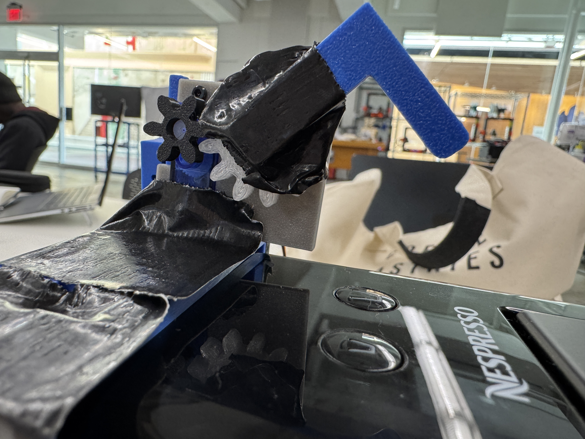
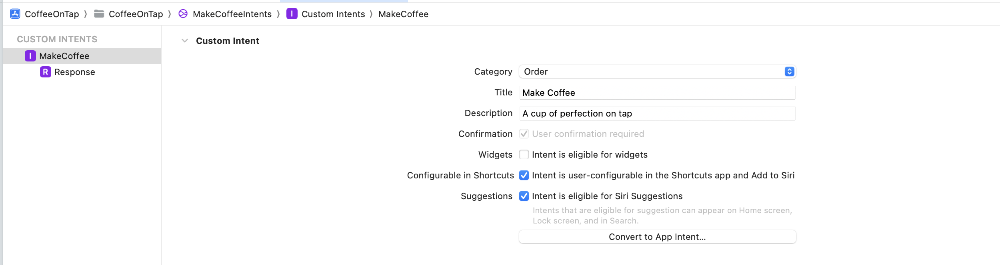

Coffee on Tap ☕️
Motivation
I fell in love with coffee in 2020, while at home bored during the pandemic. I had a Nespresso machine in my basement, and I would make coffee everday at around
7pm. I started to wonder if I could set an alarm on my phone to activate the coffee machine at a certain time. When I looked up if any coffee machine alarm clocks existed,
I was saddened to see that the only option could not connect to my phone and cost thousands of dollars!
So many home devices exist that allow people to control their home temperatures and lights with their devices, or even to lock/unlock their cars with their phones. So, why
have home devices not bridged the gap into home appliances like coffee machines yet?
One of the potential answers is that people love the coffee machines/tea kettles that they already own and use! I am obsessed with my Nespresso Mini,
and I most certaintly would not buy a coffee machine purely because it could connect to my phone. In fact, I'd probably consider it a waste of money or a
disruption to my morning routine. Thus, I wanted to build a product that could attach to people's existing coffee machines without jeopardizing the integrity of the
machines - something that could be easily installed or removed!
With this motivation, I began working on CofeeOnTap, a device that sits on top of a Nespresso machine that can connect to your home Wifi to activate
your coffee machine with a simple tap on your phone, alarm, or Siri command.
Fabrication
Hardware
I'll start by outlining the hardware components of the project before diving into the software. I will preface the HW discussion by saying that I originally planned to have the HW be able to adapt to different machine sizes and shapes. However, after much iteration I ran into several issues, which led me to focus on only my Nespresso Mini for now:
- Every machine has different width and height dimensions... (While this could be resolvable, it compounds with the rest of the issues listed)
- Every machine has a unique button placement.
- There are often multiple buttons that serve unique purposes.
- The amount of force necessary to activate - but not break - a button is unique to a machine.
3D-Modeling & Fusion
I started by designing a Servo holder in Fusion that could sit on top of my Nespresso machine. The biggest challenges were ensuring the dimensions were highly accurate so that it would "hold onto" the Nespresso machine. When the servo motor presses the button, I did not want the attachment to pop-up instead of pressing down. This led to a need for very high-accuracy. I ended up actually making the attachment a bit too small on purpose, as I knew that the 3D print would have a bit of flexing and bending that it allowed. This meant that I could bend it slightly to put it on the machine, then it would snap tightly to it.The next part that I used was inspired by this creation on Thingiverse for holding onto Nespresso pods! I figured that if I was printing a huge attachment to my coffee machine that it should serve multiple purposes, so I decided to use the sides of the extension as a canvas for holding onto Nespresso pods. Currently, all of my pods live in a bowl that takes up space on my counter and doesn't look right! To me, being able to keep your pods right with your machine makes it easy to organize and visualize the different types of pods that you have. I edited it very minimally to fit the proper dimensions and to attach easily to the holder. You can download the part here
One of the final pieces that I made was purely for aesthetics. Often coffee bars have a cute little sign indicating that it is a coffee bar, so I also created and printed a "Coffee on Tap" sign to sit on top of the Servo holder. I also went back to the original piece and added a holder for the ESP32 and the wires necessary to run the Servo, ensuring the project was fully integrated. You can download the sign here!
Lastly, an absolute game-changer was a discovery on Thingiverse to solve a problem that I forgot that I had! Since I have a Nespresso Mini, the default parts are too tall to allow me to place my coffee mug underneath the machine without removing the drip-container at the bottom. Someone on Thingiverse designed a new drip-container for the bottom that is shorter, which allows my coffee mug to fit! Here is the Thingiverse link, which I highly recommend supporting! Click here!
Servo & Circuit
I originally started with a Servo that lacked the amount of strength to fully press the button. I attempted to add gears to increase the torque and strength, except I found that no matter how much I tried, the servo was simply not powerful enough. Thus, I switched to use a much stronger Servo. I connected it to an XIAO ESP32C3 which had Wifi connectivity enabled. I soldered the ground of the Servo to the XIAO's ground, as well as power to the 5V power supply, and finally I connected the Servo's digital input pin to the D3 input pin on the XIAO. By soldering these connections to the XIAO and enabling Wifi connectivity, I would be able to connect the software to activate the Servo, while keeping the HW consolidated into a the box that I 3D modeled for it! In the process of making this work, I accidentally destroyed 3 ESP32 boards and multiple Servos...

Software
I knew that the software would be a bit more intense than the hardware since I had quite ambitious ideas. I wanted to be able to activate my coffee machine through the following ways:
- Tapping on my phone
- My morning alarm
- A shortcut on my laptop or phone
- A Siri command
I began by getting the Servo to run at all in the software. I decided to create a class for controlling the Servo in order to make the code cleaner and easier to debug. I used delays in order to simulate the time that it takes a person to press a button. We might hold down the button for a few moments.
class CoffeeServo {
Servo servo;
int pos; // Current location of servo
int startPos; // Where the servo should start
int endPos; // Where the servo should end
int increment; // How much to move it at a given moment
int updateInterval; // Speed of servo
unsigned long lastUpdate;
public:
CoffeeServo(int interval, int start, int target) {
updateInterval = interval;
startPos = start;
endPos = target;
increment = -10;
}
void Attach(int pin) {
servo.attach(pin);
servo.write(80); // Reset to start position
}
void pressButton() {
servo.write(80);
delay(2000);
servo.write(145);
delay(500);
servo.write(80);
delay(2000);
}
void Return() {
if ((millis() - lastUpdate) > updateInterval && pos != startPos) {
lastUpdate = millis();
pos -= increment;
servo.write(pos);
}
}
void reset() {
servo.write(80);
}
bool isMoving() {
return !(pos == endPos || pos == startPos);
}
};
After writing the code to control the Servo, I then created a Firebase Database in order to allow the Servo to run purely off of Wifi.
If I had used Bluetooth communication, then it would require my phone to be in-range of the device, charged, and connected in order for the coffee machine to operate.
I wanted to be able to activate the machine when I was walking back from class, and I also did not want to have to connect it repeatedly to my Bluetooth.
In order to support Wifi connectivity, I used Firebase as an in-between database that my phone could connect to for writing coffee requests, and the ESP32 could read from
and evaluate. I used Firebase since it is free, friendly to work with, and has great documentation. Using Arduino, I created a class called CoffeeDatabaseManager to manage reading from
and writing to the Firebase database. You can find this code and its connection to the above class here! I would have copied it all onto this page,
except it would be insanely long!
After completing the Servo connections and setting up the Firebase Database, I began working to build the app, Siri command, and shortcuts. I utilized SwiftUI and Xcode to make it all possible.
I started by creating a very simple SwiftUI project. The app itself is quite simple. It contains a simple interface and a button to brew your coffee. My next step, as you can see in the demo, is also adding coffee analytics! For now,
I will only showcase a portion of that code! You start by defining the app, connecting it to Firebase, and requesting Siri permission. Note that you must also enable the Siri capability in the project target, as well as add a privacy description into the Info.plist of the app:
import SwiftUI
import Firebase
import AppIntents
import Intents
class AppDelegate: NSObject, UIApplicationDelegate {
func application(_ application: UIApplication,
didFinishLaunchingWithOptions launchOptions: [UIApplication.LaunchOptionsKey : Any]? = nil) -> Bool {
// Get permission to use Siri
INPreferences.requestSiriAuthorization { status in
if status == .authorized {
print("Siri is authorized.")
} else {
print("Siri is not allowed.")
}
}
return true
}
}
@main
struct CoffeeOnTapApp: App {
@UIApplicationDelegateAdaptor(AppDelegate.self) var delegate
@StateObject private var coffeeManager = CoffeeManager.shared
init() {
FirebaseApp.configure()
}
var body: some Scene {
WindowGroup {
ContentView()
.environmentObject(coffeeManager)
}
}
}
Then, you can define the content view, which controls all of the front-end of the application. I've also abstracted the Firebase calls to a database management helper file, called CoffeeManager. The coffee manager simply formats requests for coffee to be made and sends it to the Firebase database. Here are both files, condensed in order to save space and be more readable!
// ContentView.swift
import SwiftUI
import Firebase
import Charts
struct ContentView: View {
// Manage the coffee database
@StateObject var coffeeManager = CoffeeManager.shared
// MARK: Color Palette
let primaryColor = Color(red: 0.25, green: 0.18, blue: 0.15) // Dark coffee
let secondaryColor = Color(red: 0.65, green: 0.45, blue: 0.35) // Medium coffee
let backgroundColor = Color(red: 0.97, green: 0.96, blue: 0.95) // Off-white
var body: some View {
NavigationStack {
ZStack {
backgroundColor
.ignoresSafeArea()
VStack(spacing: 0) {
Text("coffee on tap")
.font(.system(size: 36, weight: .light, design: .default))
.tracking(2)
.foregroundColor(primaryColor)
.padding(.top, 60)
Text("your daily cup on demand")
.font(.system(size: 16, weight: .light, design: .default))
.foregroundColor(primaryColor.opacity(0.7))
.padding(.top, 4)
.padding(.bottom, 40)
Spacer()
Spacer()
// Brew Button
Button(action: {
// upload the request to the database
coffeeManager.uploadRequest()
print("Brew button tapped")
}) {
Text("Brew Now")
.font(.system(size: 18, weight: .medium, design: .default))
.foregroundColor(.white)
.frame(width: 240, height: 56)
.background(primaryColor)
.cornerRadius(28)
}
.buttonStyle(PlainButtonStyle())
.shadow(color: Color.black.opacity(0.05), radius: 10, x: 0, y: 3)
.padding(.bottom, 30)
}
}
}
}
}
// CoffeeManager.swift
import Firebase
class CoffeeManager: ObservableObject {
static let shared = CoffeeManager()
@Published var isUploading = false
func uploadRequest() {
isUploading = true
let dateFormatter = DateFormatter()
dateFormatter.dateFormat = "yyyy-MM-dd HH:mm:ss"
let formattedDate = dateFormatter.string(from: Date())
let requestData: [String: Any] = [
"type": "nespresso",
"schedule_time": "now",
"timestamp": formattedDate,
"status": "waiting"
]
let ref = Database.database().reference()
ref.child("request_queue").childByAutoId().setValue(requestData) { error, _ in
self.isUploading = false
if let error = error {
print("Error uploading request: \(error.localizedDescription)")
} else {
print("Request uploaded successfully!")
}
}
}
}
Now the truly challenging part would be to create a Siri implementation and shortcut capability. I've never created either before during my time developing for iOS, so I was eager to learn. As I mentioned earlier, you must start by adding the Siri capability as a capability within your app target, then you must create a Siri capability custom intent file. This is an interface that allows you to generate an "Intent," which Siri can use to follow what a user wants to do and call upon the proper app/functionality to complete the task that the user desires. Intents have seen many recent updates, which made the documentation difficult to follow. Eventually, I removed some of the recommended code and was able to get it to (mostly) work. I created the intent in the interface, then generated the code. Within the generated code, I also added recommendations for Siri commands, which I will show below. Overall, this definitely took a ton of time, although the code itself appears deceptively simple. My next steps would be to allow Siri to customize a fun response when a coffee has been made, as it currently doesn't respond at all, yet successfully completes the task.

// Intents File!
import Foundation
import AppIntents
// Create a custom intent to make a coffee
@available(iOS 16.0, macOS 13.0, watchOS 9.0, tvOS 16.0, *)
struct MakeCoffee: AppIntent, CustomIntentMigratedAppIntent {
static let intentClassName = "MakeCoffeeIntent"
static var title: LocalizedStringResource = "Make Coffee"
static var description = IntentDescription("A cup of perfection on tap")
static var parameterSummary: some ParameterSummary {
Summary("Make Coffee on Tap")
}
func perform() async throws -> some IntentResult {
CoffeeManager.shared.uploadRequest()
return .result()
}
}
// Shortcut Information
@available(iOS 16.0, macOS 13.0, watchOS 9.0, tvOS 16.0, *)
fileprivate extension IntentDialog {
static var responseSuccess: Self {
"Coffee is brewing now"
}
static var responseFailure: Self {
"Sorry, it looks like you've had too much coffee today!"
}
}
// Provide the Siri commands
struct CoffeeShortcutProvider: AppShortcutsProvider {
static var appShortcuts: [AppShortcut] {
AppShortcut(
intent: MakeCoffee(),
phrases: [
"I need a pick me up \(.applicationName)",
"Please make me a coffee with \(.applicationName)",
"Make me a coffee with \(.applicationName)",
"Start brewing coffee with \(.applicationName)",
"Brew coffee with \(.applicationName)"
],
shortTitle: "Make a coffee",
systemImageName: "cup.and.saucer.fill"
)
}
}